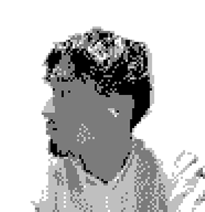

LOCAL TIME
--:-- --
\ Hi Guys! /
I'm Hirozumi Kobayashi, a freelance web designer based in Tokyo. I focus on UI design and website creation, working from concept to execution. This site is a collection of my work, thoughts,and the process behind what I create.

フリーランスのWebデザイナーとして、UIデザインやWebサイト制作を中心に活動。Webサイトの構成設計や情報設計、導線設計など、ロジカルな視点からの設計を強みとし、目的から逆算した分かりやすく伝わるデザインを重視。
これまでにECサイト運営やWeb制作など、Web領域を中心に幅広い業務に従事。ビジネスとユーザー体験の両面を意識した視点で設計・改善を行う。
新卒では株式会社IDOMにて中古車の買取・販売に従事し、約200名中5位の買取実績を獲得。その後、MINI正規ディーラーでの新車販売も経験。営業として培った「伝える力」と「顧客視点」を強みとする。